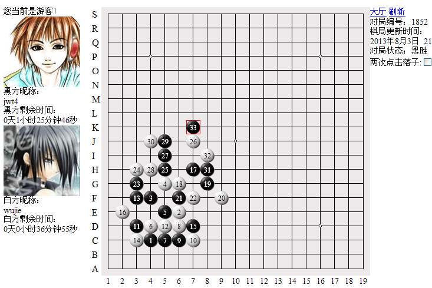
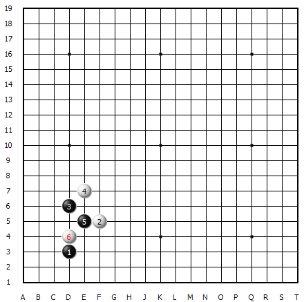
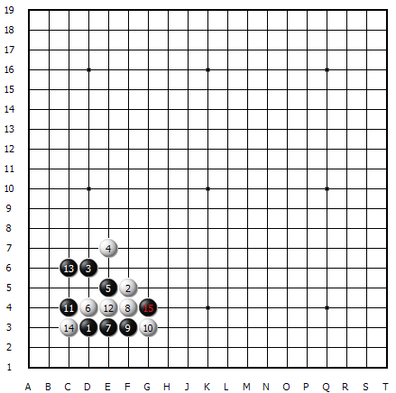
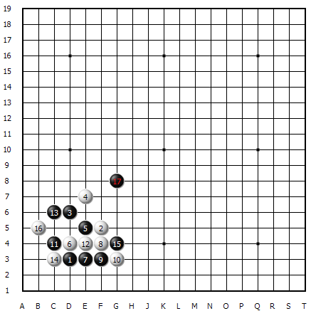
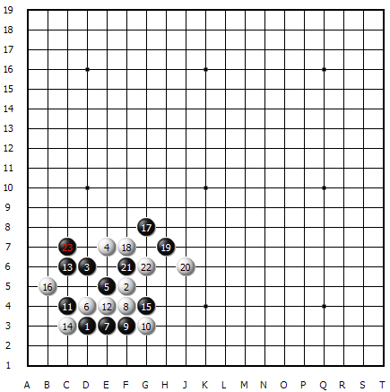
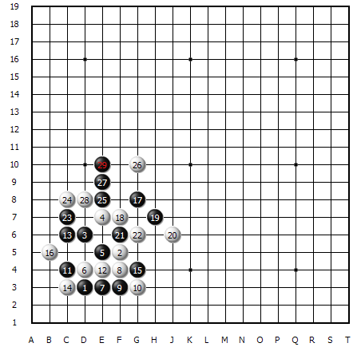
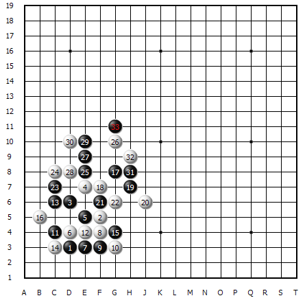

【暑假杯】滚滚“讲五”东流水淘尽“江湖英雄 ”----神秘飘手
#1 【暑假杯】滚滚“讲五”东流水淘尽“江湖英雄 ”----神秘飘手 作者：蓝天蓝 发表时间：2014-5-18 14:27:55
【棋评】【暑假杯】滚滚“讲五”东流水淘尽“江湖英雄 ”----神秘飘手
作者：jwt4
【讲五堂】jwt4 vs【江湖英雄】 wujie 对战解说对战解说
http://game.freewzq.com/offlineDisplayGame.html?html=7635241&id=1852

这是第三轮的比赛，讲五堂四台VS江湖英雄四台，讲五堂执黑胜出。

我这局比赛还是执黑，我喜欢黑棋。4手头一次见到，貌似很强哦。5手很规距的走在中间，它6手也很老实的来防我。

7手继续增强自已的棋力，8手也跟的很紧，使我难以扩展棋。9手往外活三，白棋外防。黑棋做棋路线很多了，棋型很好，可以大做文章了。11手做一手棋，逼着12手只能唯一防。13手又做一连攻胜，14手被动防守。15手防白眠三，又是二级连攻胜，算到16手不敢防外面，只能防里。

17手太潇酒了！~~~那真是：玉树临风，风流倜傥，侠骨柔肠，绝代美风姿！这飘逸的一手棋，使黑棋提前步入了胜利的节奏。它像一面随风飘扬的旗帜，高高耸立在棋盘的上端，指引着黑棋一步一步走向胜利的辉煌。

白棋从18手开始，完全陷于防守境地，毫无还手之力。我黑棋可以唯所欲为的做棋。19手是上下呼应，左右逢源。21手和23手里应外合，包抄白棋。攻的白棋已走投无路了

败招26手后，加速了白棋的输棋之路，也开启了黑棋地毯之路。27手做一手胜棋，然后29双眠三。

0手这点如果让黑棋得到，白速败。所以30手先占上了这点。31手又是一个超强的三通点，二个眠三，一个活二，能攻能守。33手，一子同时形成二个一级连攻胜。白无防。